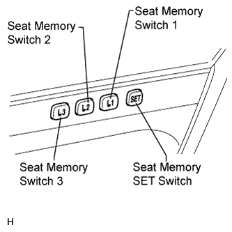
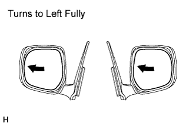
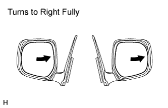
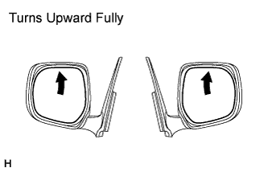

POWER MIRROR CONTROL SYSTEM (w/ Retract Mirror) > OPERATION CHECK |
| CHECK POWER MIRROR SWITCH OPERATION OF INTEGRATION CONTROL AND PANEL |
Turn the engine switch on (ACC).
With the mirror master switch set to L, check that the mirror surface moves up, down, left and right normally.
With the mirror master switch set to R, check that the mirror surface moves up, down, left and right normally.
| CHECK MEMORY AND REACTIVATION FUNCTION (w/ Seat Position Memory System) |
 |
Turn the engine switch on (IG) and move the shift lever to P.
 |
Check the seat memory switch 1.
Using the mirror master switch and mirror control switch, fully turn the mirror to the left.
Press and hold down the seat memory SET switch and seat memory switch 1. Check that the buzzer sounds for 0.5 seconds, signaling that the outer mirror position has been recorded.
Change the position of the outer mirror and then press the seat memory switch 1. Check that the buzzer sounds for 0.1 seconds and the outer mirror automatically moves to the recorded fully-turned-left position.
 |
Check the seat memory switch 2.
Using the mirror master switch and mirror control switch, fully turn the mirror to the right.
Press and hold down the seat memory SET switch and seat memory switch 2. Check that the buzzer sounds for 0.5 seconds, signaling that the outer mirror position has been recorded.
Change the position of the outer mirror and then press the seat memory switch 2. Check that the buzzer sounds for 0.1 seconds and the outer mirror automatically moves to the recorded fully-turned-right position.
 |
Check the seat memory switch 3.
Using the mirror master switch and mirror control switch, fully turn the mirror upward.
Press and hold down the seat memory SET switch and seat memory switch 3. Check that the buzzer sounds for 0.5 seconds, signaling that the outer mirror position has been recorded.
Change the position of the outer mirror and then press the seat memory switch 3. Check that the buzzer sounds for 0.1 seconds and the outer mirror automatically moves to the recorded fully-upward position.
When the outer mirror is in the driving position, check that the seat memory switch 1, seat memory switch 2 and seat memory switch 3 cause the outer mirror to move to the recorded outer mirror positions under these conditions: turn the engine switch off, open the driver side door and press the seat memory switch 1, seat memory switch 2 or seat memory switch 3 within 20 seconds.
Check that the following procedures clears the recorded outer mirror positions of the seat memory switch 1, seat memory switch 2 and seat memory switch 3: press and hold the power seat slide switch; disconnect the cable from the negative (-) battery terminal; and wait for at least 1 minute.
Confirm that all recorded outer mirror positions are cleared. Then attempt to record the outer mirror position by pressing and holding the seat memory SET switch and 2 other switches (among the seat memory switch 1, seat memory switch 2 and seat memory switch 3). Check that no outer mirror positions are recorded by individually pressing the seat memory switch 1, seat memory switch 2 and seat memory switch 3 and making sure that the outer mirror does not move.
| CHECK POWER RETRACTABLE MIRROR |
Turn the engine switch on (ACC).
At each position of the outer mirror body, check the retractable mirror operation when operating the retract switch of the outer mirror.
 |
Move the mirrors to the driving position.
Press the retract switch.
Check that the right and left mirrors move from the driving position to the retracted position.
 |
Move the mirrors to the driving position.
Move one of the mirrors to the forward position by hand.
Press the retract switch.
Check that the forward position mirror moves to the retracted position, and check that the driving position mirror moves to the retracted position.
 |
Move the mirrors to the driving position.
Move one of the mirrors to the retracted position by hand.
Press the retract switch.
Check that the driving position mirror moves to the retracted position.
 |
Move the mirrors to the retracted position.
Press the retract switch.
Check that the right and left mirrors move from the retracted position to the driving position.
 |
Move the mirrors to the retracted position.
Move one of the mirrors to the driving position by hand.
Press the retract switch.
Check that the retracted position mirror moves to the driving position.
Check the operation of the outer mirror body in relation to retract switch operations and engine switch position changes.
When the mirror body is operating, turn the engine switch off. Check that the mirror operation does not stop and continues until the operation has finished.
Repeat the step above. This time, before the mirror operation completes, turn the engine switch on (ACC) and press the retract switch. Check that the mirror operates in the opposite direction.
Check the operation of the outer mirror body when it is restrained by an obstacle.
When the mirror body is moving to the retracted or driving position, restrain the mirror body by hand. Check that the mirror stops moving.
With the mirror body stopped partway, push the retract switch. Check that the mirror body moves in the opposite direction.
| CHECK REVERSE-SHIFT-LINKED OPERATION OF MIRRORS |
 |
Turn the engine switch on (IG).
Set the mirror master switch to L or R.
Check that the mirror faces downward when the shift lever is moved to R.
Check that the outer rear view mirror returns to the original position when one of the following conditions is met:
| CHECK MIRROR HEATER (w/ Mirror Heater) |
Turn the engine switch on (IG).
Check that pressing the rear defogger switch illuminates the indicator and warms the mirror surface.
Check that after approximately 15 minutes, the indicator light turns off and the mirror heater deactivates.
| CHECK MEMORY CALL FUNCTION (w/ Seat Position Memory System) |
AUTOMATIC MEMORY CALL OPERATION INSPECTION
With the transmitter recognition code registered into the memory system, perform an entry unlock or wireless unlock operation. Open the driver door and check that the front seat, front seat belt anchor, steering wheel and outer rear view mirror automatically move to the positions recorded in memory.
MEMORY REGISTRATION (WITH WIRELESS FUNCTION)
Prepare by recording the driving position through the seat memory switch (seat memory switch 1, seat memory switch 2 or seat memory switch 3).
With the engine switch off and the driver door closed, press and hold both of the following: a seat memory switch (seat memory switch 1, seat memory switch 2 or seat memory switch 3) and the transmitter unlock switch. Continue holding the switches until the answer back buzzer sounds.
MEMORY ERASURE (WITH WIRELESS FUNCTION)
With the engine switch off and the driver door closed, press and hold both of the following: the seat memory SET switch and transmitter unlock switch. Continue holding the switches until the answer back buzzer sounds.
| EMERGENCY STOP FUNCTION (w/ Seat Position Memory System) |
During the memory call operation, press a seat memory switch (seat memory switch 1, seat memory switch 2 or seat memory switch 3), or press a front power seat switch LH (position control ECU and switch). Check that the automatic memory call operation stops.